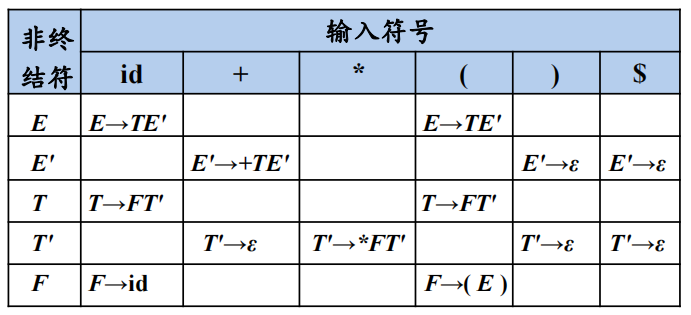
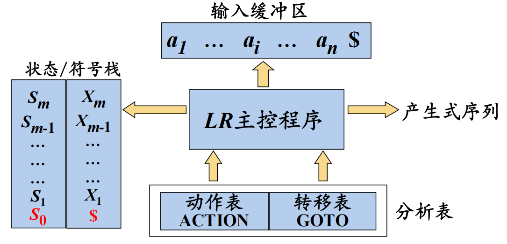
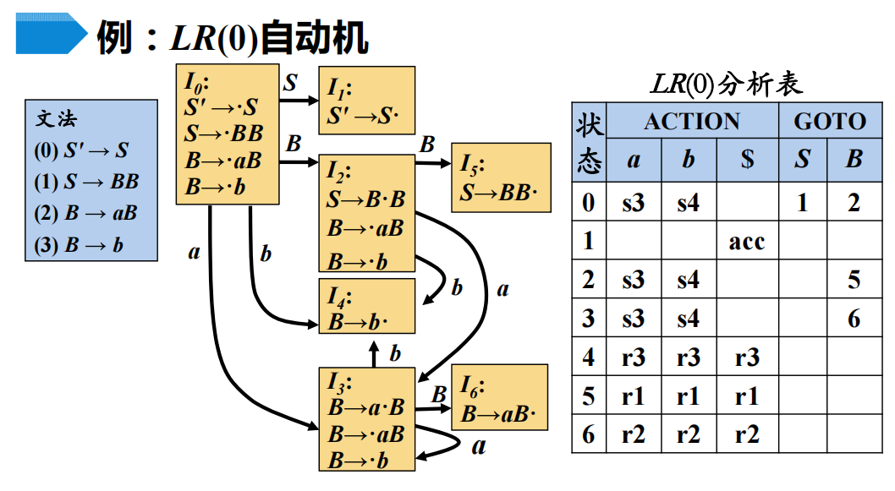
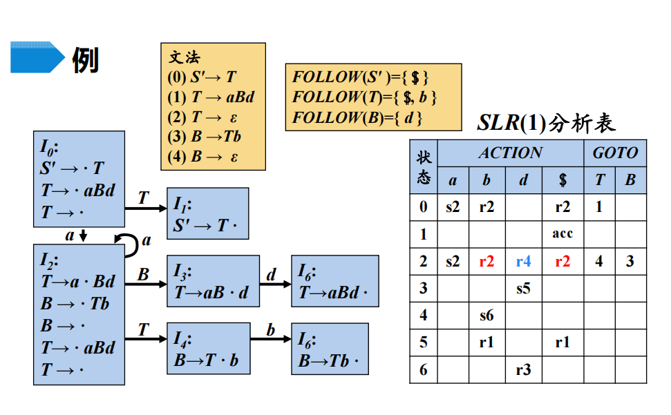
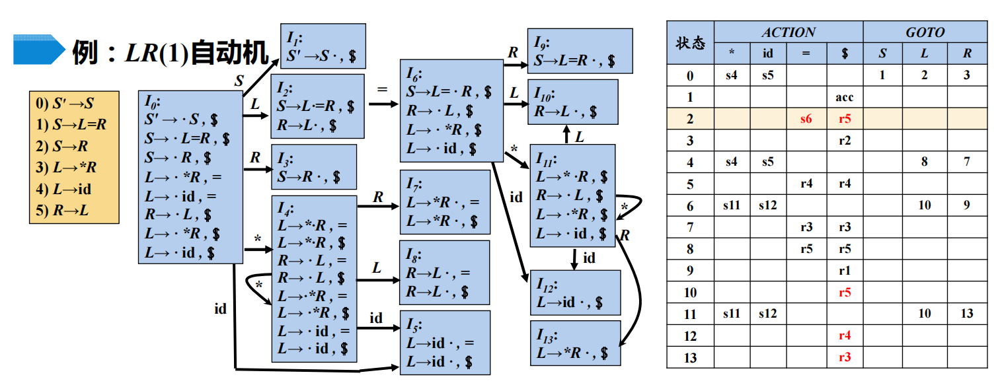
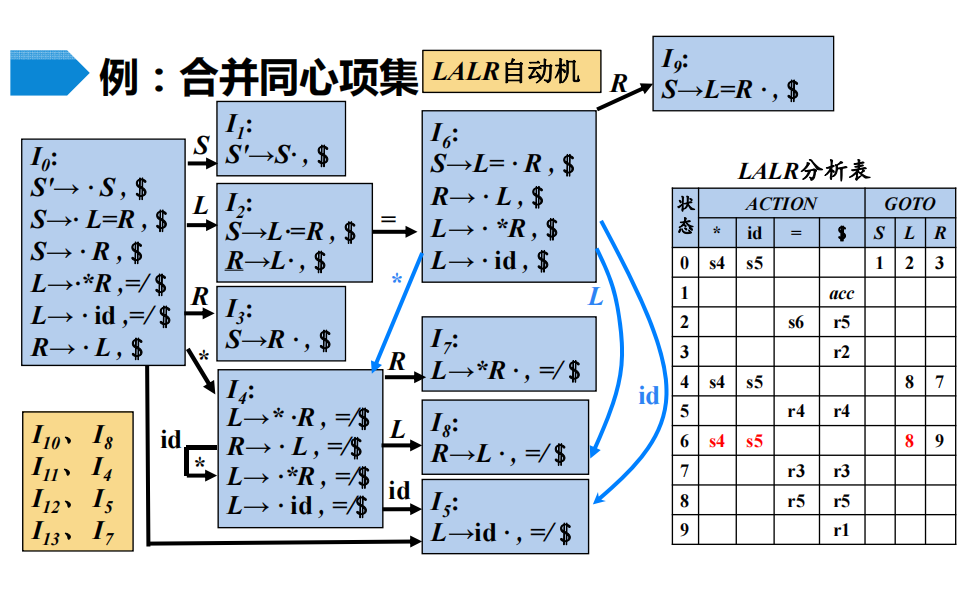

Syntax Analyzer
在我们的编译器模型中，语法分析器从词法分析器获得一个Token Stream。语法分析器的工作是根据Token Stream构造出一个语法分析树，将它传递给编译器的其他部分进一步处理。语法分析器大致分为通用的、自顶向下的和自底向上的，而通用的因为效率太低不被使用，下面会介绍后二者，自顶向下分析和自底向上分析。
Context Free Grammar
首先了解文法Grammar的概念。文法是形式语言中字符串的一套产生式规则。这些规则描述了如何用语言的字母表生成符合语法的有效的字符串。文法不描述字符串的含义，也不描述在任何上下文中可以用它们做什么——只描述它们的形式。
Grammar: G=(Vt,Vn,P,S)。意思是说，一个Grammar由下面四个元素组成：
- 一个终结符号(terminal symbol)集合，有时也叫词法单元(token)。
- 一个**非终结符号(nonterminal symbol)**集合，又是也叫语法变量。每个非终结符号表示一个终结符号串的集合。
- 一个产生式(production)集合。
- 指定一个非终结符号位开始符号(start symbol)。开始符号表示的是该Grammar中最大的语法成分。
例如：stmt -> if (expr) stmt else stmt这样的规则叫做production，if和()被称为terminal symbol，expr和stmt这样的变量表示终结符号的序列，称为nonterminal symbol。stmt就是start symbol。
上下文无关文法 Context Free Grammar指的是产生式左侧只能包含一个符号，并且该符号为非终结符号的文法。这个限制是非常重要的。
事实上一共有四种文法，逐级限制。对于α→β：
- 0型文法：α中至少包含1个非终结符
- 1型文法（CSG 上下文有关） ：｜α｜≤｜β｜
- 2型文法（CFG 上下文无关文法） ：α ∈ 非终结符
- 3型文法（RG 正则）：A→wB 或 A→w (A→Bw 或A→w) A/B代表非终结符
程序设计语言的语法通常是CFG，通常用RG匹配Token。
还有一些非常重要的概念需要了解：
-
推导Derivation: 简单的说，就是把production的右部替换成左部，只替换1次就是directly derive。记做$\Rightarrow^0$，若干次替换记做$\Rightarrow^*$。相反的过程就是归约Reduction。parsing tree是推导的图形化表示。
-
Language: 由grammar
G的start symbolS推导出的所有sentence构成的集合称为grammarG生成的language，记为L(G)。L(G) = {w /S =>*, w ∈ Vt*}。要证明一个Language和Grammar对应，需要证明Grammar所有能产生的sentence都属于Language，Language中所有的string都能被Grammar产生。 -
Ambiguous(二义性): 若grammar对同一sentence可以产生不止一棵parsing tree，则称G是ambiguous。要改写二义性文法为非二义性文法
- 划分优先级和结合性
- 引入一个新的非终结符，增加一个子结构并提高一级优先级（优先级的判断）
- 递归非终结符在终结符左边，运算具有左结合性，否则具有右结合性。
回顾一下，Syntax Analyzer的作用是生成AST或Parsing Tree。其实parsing tree是推导的图形化表示。AST则是精简的Parsing Tree，一般我们生产AST。
现在我们手头有一个Token Stream。那么我们如何进行推导呢去构建parse tree呢？主要有两个问题：换哪个nonterminal symbol? 用哪条production?。常用的有两种办法：
- 在Left-most Derivation最左推导中，总是选择每个句型的最左nonterminal symbol进行替换。这个和top-down parsing一起使用，也就是从Parse Tree的顶向下分析。**左句型(left sentential form)**是指推导至该句子的全部左推导。
- 在Right-most Derivation最右推导中，总是选择每个句型的最右nonterminal symbol进行替换，最右推导也被称为规范推导。这个和down-top parsing一起使用，也就是从Token Stream向上构造Parse Tree。**右句型(right sentential form)**是指推导至该句子的全部右推导。
top-down parsing
在top-down parsing中，总是采用Left-most Derivation。自顶向下语法分析可以被看做寻找输入串的最左推导(若符号串α中有两个以上的非终结符号，则对推导的每一步坚持把α中的最左非终结符号进行替换，称为最左推导)的过程。
具体怎么做，使用的是Recursive-Descent Parsing(递归下降分析)，这是自顶向下分析的通用形式。他由一组过程组成，每个过程对应一个nonterminal symbol。Rust例程如下。
#![allow(unused)] fn main() { enum Symbol{ Terminal(TerminalSymbol), Nonterminal(NonterminalSymbol), } enum TerminalSymbol { ... }; struct NonterminalSymbol { productions: Vec<Vec<Symbol>>>, } impl NonterminalSymbol { fn parse(&self,mut tokenstream: &[TerminalSymbol]) { for production in self.productions { for symbol in production { match symbol { Terminal(ts) => { if ts == tokenstream[0] { tokenstream = &tokenstream[1..]; } else { // 如果所有的production中，只有1个在匹配到第k个symbol不会return， // 其实也可以通过向前看k个symbol来实现确定的递归，不需要回溯。 // 这就是所谓的预测分析技术。 // 即使有多个可能匹配的也可以向前看若干个symbol进行剪枝，不过我就懒得写了 return; } } Nonterminal(ns) => { // 是需要递归的 ns.parse(tokenstream); } } } } } } }
消除左递归
自顶向下语法分析不能处理左递归（left recursion）的文法：如果存在如A=>Ax这样的production，或者可以间接推导出这样的production，那么递归下降就会出现死递归。不过左递归是可以消除的。消除左递归算法
-
消除产生式中的直接左递归是比较容易的。例如假设非终结符P的规则为
P -> Pα | β其中，β是不以P开头的符号串。那么，我们可以把P的规则改写为如下的非直接左递归形式：
P -> βP’,P’-> αP’ | ε -
消除间接左递归，可以先把所有的左递归转化成直接左递归消除。
-
综上，消除左递归的算法：
#![allow(unused)] fn main() { for i in 0..n { for j in 0..i { if 有 A[i] -> A[j]β 这样的式子 for 所有的A[i] -> a[1]|a[2]...|a[k] 改写成 A[i] -> a[1]β | a[2]β | ... | a[k]β; } 移除 A[i]本身的左递归; } }
提取左公因子
提取左公因子是一种文法转换方法。他可以产生适用于预测分析分析技术的文法。比如下面的例子，当不清楚如何在S的两个产生式中选择的时候，我们可以通过改写产生式来推后这个决定。例如：
S -> acd | abe 遇到a咋办，选哪个？
-----------------改写
S -> aS'
S' -> cd | be
LL(1)
LL(1)文法，表示从左向右的扫描输入，产生最左推导，每一步向前看一个输入符号来确定语法分析动作，就不用回溯了。显然，LL(1)文法不可能是左递归的，也不可能是有二义性的。他等价于下面的约束：
对于G的任意两个产生式A -> alpha | beta
alpha和beta不能都推导出以tokena开头的串。alpha和beta最多只有一个能推导出空串。
分析表的构造过程：构造FIRST集->构造FOLLOW集->构造SELECT集->构造分析表 :star2:
FIRST(α)：给定一个符号串α，α的串首终结符集FIRST(α)被定义为可以从α推导出的所有串 首终结符构成的集合。如果α =>* ε，那么ε也在FIRST(α)中。FOLLOW(A)：可能在某个句型中紧跟在A后面的终结符a的集合。FOLLOW(A)={a| S =>* αAaβ, a∈Vt, α,β∈(Vt∪Vn)*}。另外，如果A是某个句型的最右符号，则将结束符$加入FOLLOW(A)。SELECT(A -> α)，productionA -> α的可选集是指可以选用该production进行derive的输入符号的集合，记做SELECT(A -> α)。- 如果
ε∉FIRST(α), 那么SELECT(A -> α) = FIRST(α) - 如果
ε∈FIRST(α)，那么SELECT(A -> α) = (FIRST(α) - {ε}) ∪ FOLLOW(A)。
- 如果
- 可以由这三个概念定义LL(1)文法。就是文法G的任意两个具有相同左部的production
A-> α | β，满足SELECT(A -> α)和SELECT(A -> β)不相交。根据SELECT集，我们可以构造parsing table。
下面是一个例子：

E -> TE'
E' -> +TE' | ε
T -> FT'
T' -> *FT' | ε
F -> (E) | id
-------------------------
FIRST(E ) = {(, id}
FIRST(E') = {+, ε}
FIRST(T ) = {(, id}
FIRST(T') = {*, ε}
FIRST(F ) = {(, id}
- 如果X是一个终结符，那么FIRST ( X ) = { X }
- 如果X是一个非终结符，且 X->Y1Y2...Yk∈P (k≥1)
FISRT(X) = FIRST(Y1)
如果ε在Y1中， FISRT(X) = FIRST(Y1)+FIRST(Y2)
如果ε在Y1,Y2中， FISRT(X) = FIRST(Y1)+FIRST(Y2)+FIRST(Y3)
...
- 如果 X->ε∈P，那么将ε加入到FIRST( X )中
--------------------------
FOLLOW(E ) = {$, )}
FOLLOW(E') = {$, )}
FOLLOW(T ) = {+, $, )}
FOLLOW(T') = {+, $, )}
FOLLOW(F ) = {*, +, $, )}
不断应用下列规则，直到没有新的终结符可以被加入到任何FOLLOW集合中为止
1. 将$放入FOLLOW( S )中，其中S是开始符号，$是输入右端的结束标记
2. 如果存在一个产生式A->αBβ，那么FIRST(β)中除ε之外的所有符号都在FOLLOW(B)中
3. 如果存在一个产生式A->αB，或存在产生式A→αBβ且FIRST(β)包含ε，那么FOLLOW(A)中的所有符号都在FOLLOW(B)中
---------------------------
SELECT
下推自动机，可以理解为一个有栈的有穷自动机。用下推自动机解析LL(1)文法，就不需要递归了。Rust例程如下，但是这里的错误处理都panic了，没有处理。更科学一点的做法是给出错误原因。用文字描述是：
- 先将开始符号入栈
- 每次弹出栈顶元素
- 如果是非终结符，那么我们查表，将对应的产生式入栈（Generate）。如果表为空则报错（Error）。
- 如果是终结符，那么进行匹配（Match）。如果不匹配则报错（Error）。
- 直到栈为空，如果此时输入流正好匹配完，则匹配成功。（Accept）
#![allow(unused)] fn main() { use std::collections::{HashMap, VecDeque}; #[derive(PartialEq, Eq, Hash)] pub enum Term { Token(String), Empty, End, } #[derive(PartialEq, Eq, Hash)] pub struct NonTerm<'a> { productions: Vec<Vec<Symbol<'a>>>, } #[derive(PartialEq, Eq, Hash)] pub enum Symbol<'a> { NonTerm(&'a NonTerm<'a>), Term(&'a Term), } // input: 输入缓冲区 // start: 开始符号 // table: 预测分析表 pub fn parse( mut input: &[Term], start: &Symbol, table: &HashMap<NonTerm, HashMap<Term, Vec<Symbol>>>, ) { let mut stack = VecDeque::new(); stack.push_front(start); while !stack.is_empty() { let s = stack.pop_front().unwrap(); // 弹出栈顶符号 let i = &input[0]; // Token流第一个符号 match s { Symbol::NonTerm(nonterm) => { if let Some(production) = table.get(&nonterm).unwrap().get(&i) { for sym in production.iter().rev() { stack.push_front(&sym); } } else { panic!() } } Symbol::Term(token) => { if *token == i { input = &input[1..]; } else { panic!() } }, } } } }
bottom-up parsing
在bottom-up parsing中，总是采用的是Leftmost-reduction的方式，也就是反向构造的Rightmost-derivation。自底向上的语法分析过程，可以看作是将一个串w归约为文法开始符号的过程。
具体怎么做，使用的是**Shift-reduce(移入-归约)**分析，这时自底向上语法分析的通用框架。所有重要的自底向上方法对于手工编码而言都太复杂了，但是对于诸如Yacc的分析程序生成器却很合适。移入-归约分析：
- 他用一个栈来保存文法符号，用一个输入缓冲区来存放将要进行语法分析的其他符号。
- 在对输入串的一次从左到右的扫描中，语法分析器逐个将输入符号 移入到栈顶，直到可以对栈顶的一个文法符号串β进行归约为止。他将β归约为某个产生式的头。
- 语法分析器不断的重复着上面的扫描过程，知道它检测到一个语法错误，或者栈中包含了开始符号并且输入缓冲区空了，这说明分析成功。
所以，怎么根据Token和所谓的当前状态决定下一个动作呢？我们有两个表，ACTION和GOTO，统称LR分析表。
ACTION[s][t]表示，在当前state为s，而下一个输入的token为t时，要执行的动作，有4种- Shift. Shift the next input symbol onto the top of the stack.
- Reduce. The right end of the string to be reduced must be at the top of the stack. Locate the left end of the string within the stack and decide with what nonterminal to replace the string.
- Accept. Announce successful completion of parsing.
- Error. Discover a syntax error and call an error recovery routine.
GOTO[n]，表示在归约到n之后，状态的转移。
关于如何构造LR分析表，不同的文法有不同的构造方式，一会儿再介绍，不过利用他们我们可以完成分析，分析过程的代码如下。
#![allow(unused)] fn main() { enum Action { Shift, // 第几个状态 Reduce(u32), // 第几条产生式 Error(&'static str), Accept } fn parse(input: &[Token]) { let mut state = 0; // 一开始的状态是初始状态 let mut stack = vec![]; // 一开始符号栈是空的 let mut input = input.iter(); loop { let token = input.next().unwrap(); match ACTION(state, token) { Action::Reduce(pr) => { let (A, beta) = PRODUCTION[pr]; // 这个的类型还没有考虑，A->beta for _ in 0..beta.len() { // 弹出栈顶的|beta|个符号 stack.pop(); } stack.push(A); state = GOTO[state][A]; ... }, Action::Shift => { stack.push(token); }, Action::Accept => break, Action::Error(e) => panic!("Error: {}",e), } } } }

P.S. 浙江大学的课件中符号栈叫做parsing stack
冲突
就像top-down parsing不能解决左递归的文法，并不是所有的CFG都能使用移入-归约语法分析技术。对于这样的文法，直接使用移入归约分析会陷入下面的问题：即使知道了栈中的所有内容和接下来的k个输入符号，我们仍然无法判断应该进行移入操作还是归约操作，或者无法在多个可能的归约方法中选择正确的归约动作，这就是冲突。
冲突反应在LR(1)/LALR状态机上，就是对同一个状态，里面有1-n个归约动作和0-m个移入动作。如果归约动作的展望符和移入的字符彼此都不同则没有冲突，如果彼此之间的展望符相同则发生冲突。冲突反应在LR(0)/SLR(1)状态机上，如果对同一个状态，里面有归约动作，但是还有别的动作，那么LR(0)就会发生冲突；如果对同一个状态，里面有1-n个归约动作和0-m个移入动作，如果归约动作的FOLLOW集和移入的字符彼此都不同则没有冲突。
接下来，将要介绍4种分析表的构造方式，分别是LR(0), SLR, LR(1)和LALR。如果一个文法，使用LR(0)的构造方式没有产生冲突，那么就说该文法是LL(0)的，其他亦然。下面会介绍每个文法的
- 自动机状态(项目集闭包)的构造方法。
- 自动机的构造方法。
- 分析表的构造方法。
分析能力上，LR(0) < SLR < LALR(1) < LR(1)
LR(0)
在介绍LR(0)分析表构造方法之前，要先了解下面这些概念：
- 增广文法：如果G 是一个以S为开始符号的文法，则G的增广文法 G' 就是在G中加上新开始符号S' 和产生式S' → S而得到的文法。
- 初始项目：如下面的
·S'。 - 接收项目：如下面的
S'·。 - 归约项目：原点的位置在最后。
A-> XYZ·就是归约项目，是时候把XYZ归约成A了 - 后继项目：同属于一个产生式的项目，但圆点的位置只相差一个符号，则称后者是前者的后继项目。比如
A-> XYZ·就是A-> XY·Z的后继项目。 - 等价项目：凡是圆点后面存在非终结符的时候就存在等价项目，如下面例子中的
S' -> ·S，那么也就是在等待S能推导出的式子，S -> ·BB，这两个项目就是等价项目。
最后是一个例子。例子中的每一个黄色的框就是一个项目集闭包，对应LR(0)自动机的一个状态。
closure的构造：LR(0) 项目集闭包的构造还是很简单的。·的意思是“等待”，如果等待的是非终结符，如上面例子中的S' -> ·S，那么也就是在等待S能推导出的式子，S -> ·BB，也加入到项目集中（其实就是上面说的等价项目）。伪代码如下，输入项目集（若干个项目的集合），输出该项目集闭包。
#![allow(unused)] fn main() { // I: 某个项目 fn closure (I: HashSet<Item>) -> HashSet<Item> { let mut J = I; let mut continue = true; while (continue){ continue = false; for A → α·Bβ in J { // G 指的是该文法 for (G的每个产生式B → γ) { // insert如果已经存在返回false continue ||= J.insert(B → ·γ); } } } J } }
我们知道了状态(项目集闭包)的构造，那么LR(0)自动机的构造，其实就是将项目集闭包和他的某个符号的后继项目的项目集闭包，用正在等待的符号连接。不过中间还涉及到两个过程。是goto的构造和Canonical LR(0) Collection的构造，其实就是状态的转移和所有状态的构造。
其实从上面的表述就可以看出潜在的冲突。“他的某个符号的后继项目”，可能对于某个项目集闭包，不只有一个。而且，如果不只一个，且不是等价项目，那么就会出问题。这个可以看后面的其他文法。
#![allow(unused)] fn main() { fn goto(I: HashSet<Item>,X:Symbol) -> HashSet<Item>{ let J = HashSet::new(); for A → α·Bβ in I { J.insert(A → α·Bβ); } } fn collection() { let C:HashSet<HashSet<Item>> = set![closure(set![S' -> ·S])]; let mut continue = true; while continue{ continue = false; for I in C { for G的每一个文法符号X，别忘了结束符$ { let a = goto(I,X); if !a.is_empty() { continue ||= C.insert(a); } } } } } }
令$I_i$对应状态$i$。状态$i$的语法分析表按照下面的方法构造，$sj$表示移入，$rj$表示使用第$j$条产生式归约。$V_T$指的是Terminal集合。
-
if $A→α·aβ∈I_i$ and $GOTO( I_i , a )=I_j$ then $ACTION[ i, a ]=sj$
-
if $A→α·Bβ∈I_i$ and $GOTO( I_i , B )=I_j$ then $GOTO[i,B]=j$
-
if $A→α·∈I_i$ 且 $A ≠ S'$ then for $a∈V_T∪{$}$ do $ACTION[i,a]=rj$（j是产生式A→α的编号）
-
if $S'→S· ∈I_i$ then $ACTION [ i, $ ]=acc$
-
没有定义的所有条目都设置为$error$
LR0自动机构造例子，https://www.bilibili.com/video/BV1zW411t7YE?p=28&t=396.6。

SLR(1)
比LR(0)更强的一点的是SLR(1)，也叫SLR。SLR的基本思想是，LR(0)对于归约规则太草率，怎么A->B·后面无论跟着什么终结符都可以进行归约呢？显然后面的终结符，一定是FOLLOW(A)的元素嘛。还记得FOLLOW集吗，在某个句型紧跟在A后面的非终结符的集合。
SLR的状态机和LR(0)是一样的。不过在构造分析表的时候有所不同，其实只有第三条不同。
- if $A→α·aβ∈I_i$ and $GOTO(I_i,a)=I_j$ then $ACTION[i,a]=sj$
- if $A→α·Bβ∈I_i$ and $GOTO(I_i,B)=I_j$ then $GOTO[i,B]=j$
- if $A→α·∈I_i$ and $A ≠ S'$ then for $\forall a ∈ FOLLOW(A)$ do $ACTION[i,a]=rj$ （$j$是产生式$A→α$的编号）
- if $S'→S·∈I_i$ then $ACTION [ i , $ ]=acc$
- 没有定义的所有条目都设置为$error$

LR(1) :star2:
SLR只是简单地考察下一个输入符号$b$是否属于与归约项目$A→α$相关联的$FOLLOW(A)$，但$b∈FOLLOW(A)$只是归约$α$的一个必要条件，而非充分条件。
LR(1):不过并不是所有的Context-free grammar都是上面介绍的LR(0)或SLR有时我们需要向前查看k个符号才知道该执行什么动作，有价值的是k=1，就是LR(1)。
LR(1)状态机的状态和之前两个就不一样了。我们要了解规范LR(1)项目和展望符的概念。将一般形式为 $[A→α·β, a]$的项称为 LR(1)项(规范LR(1)项目)，其中$A→αβ$ 是一个产生式，$a$是一个终结符(这里将$视为一个特殊的终结符)它表示在当前状态下，A后面必须紧跟的终结符，称为该项的展望符(lookahead) 。LR(1) 中的1指的是项的展望符的长度。
- 在形如$[A→α·β, a]$且$β ≠ ε$的项中，展望符$a$没有任何作用
- 但是一个形如$[A→α·, a]$的项在只有在下一个输入符号等于$a$时才可以按照$A→α$ 进行归约，这样的a的集合总是FOLLOW(A)的子集，而且它通常是一个真子集。（SLR就是简单的认为a的集合就是FOLLOW(A)）
那么，LR(1)的项目集闭包（closure函数）, 状态机（goto函数和collection函数）又要怎么构造呢？代码如下，意思其实也很简单。之前是如果在·B就把B的产生式B->·γ也加进来；现在对[·Bβ,a]是把[B->·y, FIRST(βa)]加进来，其实就是对展望符多了限制。
#![allow(unused)] fn main() { // I: 某个项目 fn closure (I: HashSet<Item>) -> HashSet<Item> { let mut J = I; let mut continue = true; while (continue){ continue = false; for [A → α·Bβ,a] in J { // G 指的是该文法 for G的每个产生式B → γ { // 注意这里是和LR(0)不同的地方 // β如果不是空，FIRST(β)就和a没有任何关系 for b in FISRT(βa) { continue ||= J.insert([B->·y,b]); } } } } J } }
那么LR(1)自动机的构造，和LR(0)就很相似了。其实就是将项目集闭包和他的某个符号的后继项目的项目集闭包，用正在等待的符号连接。不过中间还涉及到两个过程。是goto的构造和Canonical LR(1) Collection的构造。和LR(0)很相似。看下面的代码，只有第3、4、8行不同。
#![allow(unused)] fn main() { fn goto(I: HashSet<Item>,X:Symbol) -> HashSet<Item>{ let J = HashSet::new(); for [A → α·Bβ, a] in I { J.insert([A → α·Bβ, a]); } } fn collection() { let C:HashSet<HashSet<Item>> = set![closure(set![S' -> ·S, $])]; let mut continue = true; while continue{ continue = false; for I in C { for G的每一个文法符号X，别忘了结束符$ { let a = goto(I,X); if !a.is_empty() { continue ||= C.insert(a); } } } } } }
令$I_i$对应状态$i$。状态$i$的语法分析表按照下面的方法构造，$sj$表示移入，$rj$表示使用第$j$条产生式归约。
- if $[A→α·aβ, b ] ∈I_i$ and $GOTO( Ii , a )=I_j$ then $ACTION[ i, a ]=sj$
- if $[A→α·Bβ,b ] ∈I_i$ and $GOTO( Ii , B )=I_j$ then $GOTO[ i, B ]=j$
- if $[A→α·, a ] ∈Ii$且$A ≠ S'$ then $ACTION[ i, a ]=rj$（j是产生式A→α的编号）
- if $[S'→S·, $] ∈Ii$ then $ACTION [ i, $ ]=acc$;
- 没有定义的所有条目都设置为$error$

LALR分析法
LALR(lookahead LR)的思想是合并LR(1)中的一些状态，准确的说是合并同心项集，因为LR(1)的状态非常的多。如果合并之后分析表没有产生冲突那么文法就是LALR的。其实所谓的“心”，指的是项目的第一分量。比如LR(1)例子中的I8和I10，里面的项的“心”都是R->L·，所以说他们是同心的。
LALR分析法可能会作多余的reduce动作，但绝不会作错误的shift操作。如果一个文法是LR(1)的，想把他转化成LALR(1)，可能会带来reduce-reduce冲突，但是不会带来shit-reduce冲突。
这个例子的文法和LR(1)的是一样的。

Ambiguous grammar
可生成带有两个不同分析树的串的文法称作二义性文法(Ambiguous grammar)。每个二义性文法都不是LR的。但是某些类型的二义性文法在语言的描述和实现中很有用。
重写文法以消除二义性的方法，通常我们通过优先级和结合律来消除二义性：
- 为了处理文法中的运算优先权问题，就必须把具有相同优先权的算符归纳在一组中，并为每一种优先权规定不同的规则。
- 左递归规则使得它的算符在左边结合，而右递归规则使得它们在右边结合（Left recursion is commonly used to make operations left associative）。
比如，对于一个简单算术的文法，二义性版本。这个的二义性是显然的。
E -> E op E | E | number
op -> * | - | +
先给他来一个优先级，不过还是二义性的。比如10-5-2，分析树可以是(- (- 10 5) 2)，也可以是(- 10 (- 5 2))。
E -> E opadd E | T
opadd -> + | -
T -> T * T | number
在给他加上左结合，这样就消除了二义性。比如10-5-2，分析树就只能是(- (- 10 5) 2)。有时候二义性是无关紧要的，比如对于10+5+2，无论是(+ (+ 10 5) 2)还是(+ 10 (+ 5 2))的结果是一样的，不过对于分析算法来说，总是要选一个。
E -> E opadd T | T
opadd -> + | -
T -> T * number | number